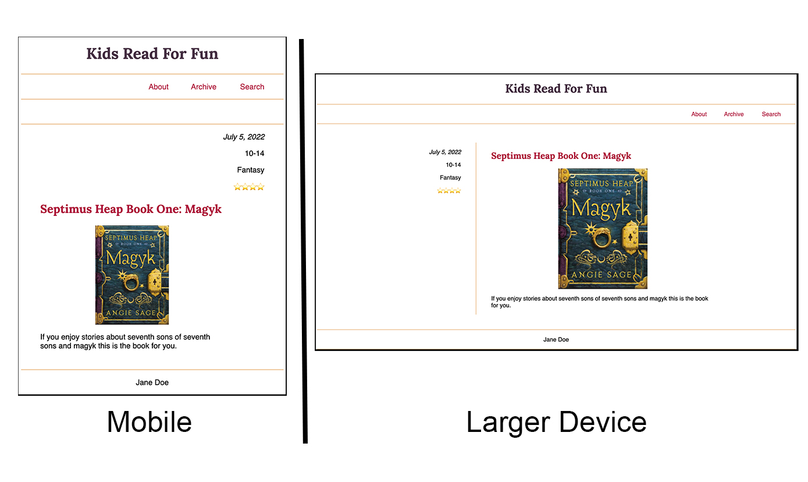

Prove - Build a Blog Part 1
Design, Grid Review, and Accessibility
File Management:
Your project should be in a folder called 'blog'. Make sure you have an index.html page and a separate CSS file.
Instructions:
The image is located at: 'https://upload.wikimedia.org/wikipedia/en/5/5f/Magkycover2.jpg'
Use grid to layout the design.
Check design principles and accessbility.
We will continue with this book blog in our next prove and will be adding two more books and will bring in all three books dynamically with JavaScript. But this prove will just use static content for one book.
This demonstrates how it will look on different devices.
Design
Visit this Design Basics Page to review good design principles.
Check your site for accessbility
Visit this WAVE (Web Accessibility Evaluation Tool) to check your published site URL and correct any accessbility errors you might find.
Submit your project
Commit your changes, then push them to GitHub. Wait a few minutes then check to make sure they show on Github pages.
After verifying that your page updated, submit the URL to your page in Ilearn. The URL will look something like this:
https://githubusername.github.io/wdd131/blog
Make sure to replace "githubusername" with your actual github username.